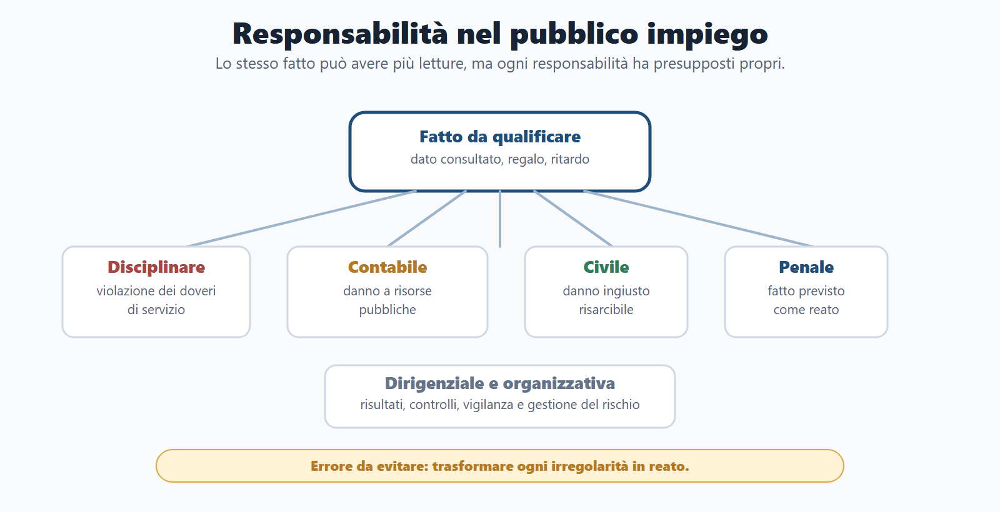
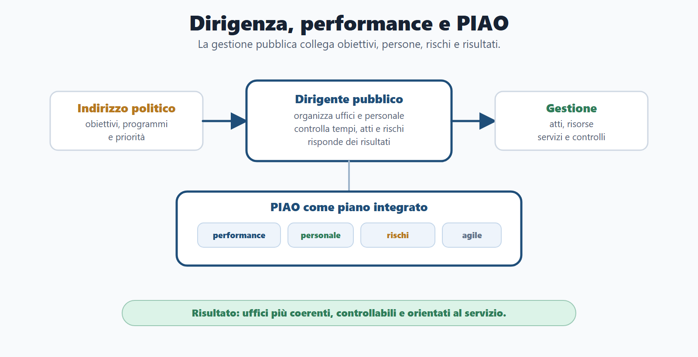
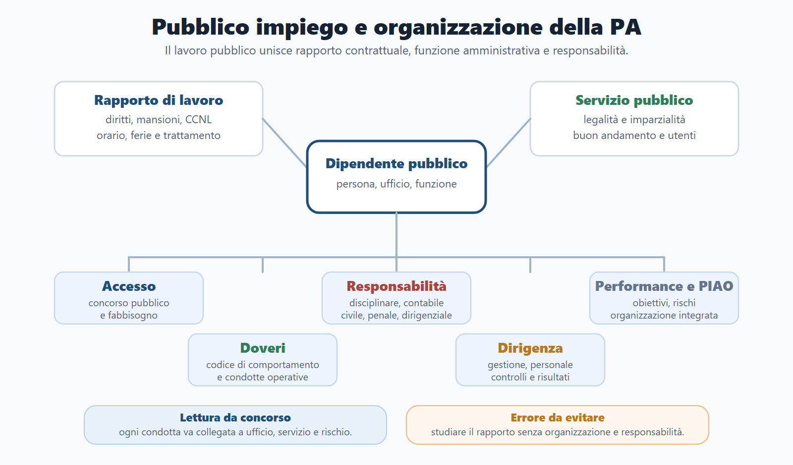
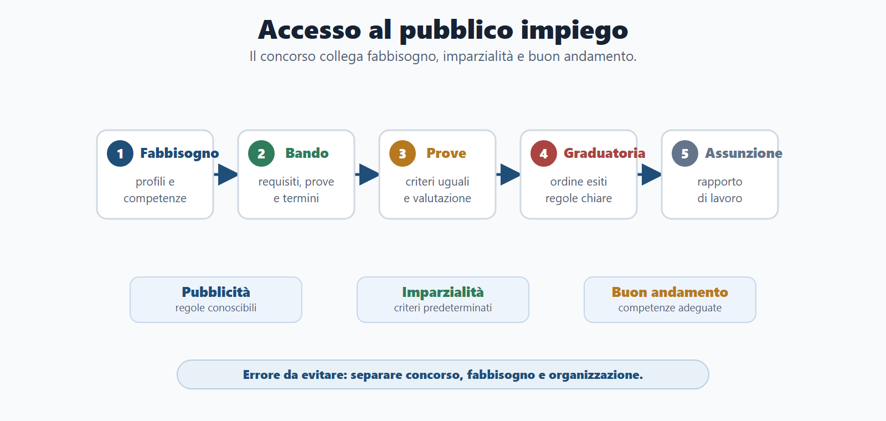
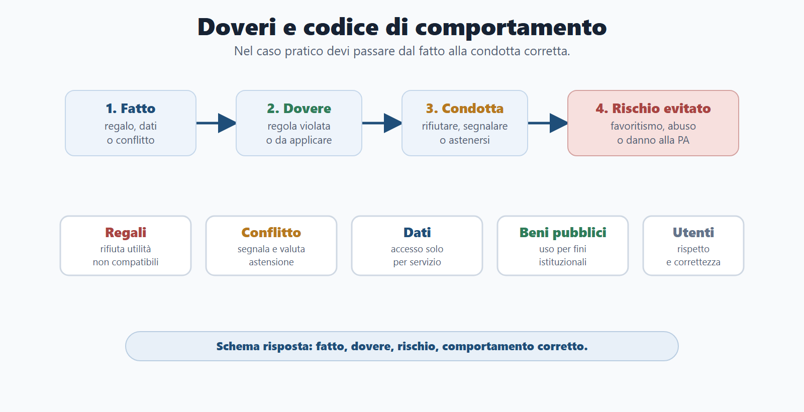

VOL-01 · Capitolo 06
Parte II · Materie comuni
Pubblico impiego e
organizzazione della PA
Il pubblico impiego non è soltanto una materia sul contratto di lavoro. È il punto in cui l’organizzazione della PA incontra persone, competenze, responsabilità, etica pubblica e qualità dei servizi. Comportamento individuale e organizzazione dell’ufficio non sono separati.
Schema
Responsabilita dipendente dirigente

Schema
Dirigenza performance piao

Schema
Pubblico impiego mappa operativa

Schema
Accesso pubblico impiego flusso

Schema
Doveri codice comportamento

01 · Doppia natura
Rapporto di lavoro e servizio alla collettività
Il dipendente ha stipendio, mansioni e diritti contrattuali. Opera però dentro un apparato che persegue interessi pubblici. Per questo il lavoro pubblico è in larga parte contrattualizzato nella gestione, ma pubblicistico nella cornice dei fini, dell’organizzazione e delle responsabilità. Il datore è una PA: legalità, selezione imparziale, trasparenza, controlli.
Accesso
Concorso, pubblicità, imparzialità, fabbisogno. Deroghe come eccezioni, con base normativa.
Doveri e codice
Diligenza, imparzialità, riservatezza, astensione, cura dei beni. Il codice traduce i principi in condotte.
Dirigenza e PIAO
Indirizzo politico vs gestione; performance; prevenzione del rischio.
02 · BANDO
Come usare questo capitolo sul bando
| Come usarlo | Se la salti | |
|---|---|---|
| B — Bando | Cerca pubblico impiego, ordinamento del personale, organizzazione PA, codice di comportamento, responsabilità, dirigenza, performance, PIAO, anticorruzione, lavoro agile. | Studi il CCNL e perdi i nuclei da prova. |
| A — Aree | Collega a amministrativo, Costituzione, procedimento, trasparenza, privacy, contabilità, contratti, enti locali. | Tratti il lavoro pubblico come diritto privato. |
| N — Nuclei | Accesso, contrattualizzazione, doveri, responsabilità, indirizzo/gestione, dirigenza, performance, PIAO, conflitto, whistleblowing. | Memorizzi elenchi di ferie e permessi. |
| D — Diario | Confondere politico e dirigente; ridurre il codice a regole formali; ignorare il conflitto potenziale; PIAO come burocrazia astratta. | Cadi nelle trappole situazionali. |
| O — Output | Tabella dovere/comportamento/rischio, orale sulla dirigenza, caso su dati/regali/conflitto, mappa responsabilità. | Sai le fonti e non risolvi il caso. |
03 · Accesso
Il concorso tutela imparzialità e buon andamento
L’accesso avviene ordinariamente mediante concorso o procedura selettiva pubblica. Seleziona personale coerente con il profilo e con i compiti dell’amministrazione. Il D.Lgs. 165/2001 è il riferimento generale; gli artt. 97 Cost. e 35 del 165 collegano reclutamento e organizzazione. Idoneità non è diritto automatico all’assunzione; lo scorrimento della graduatoria non è sempre obbligatorio.
| Elemento | Perché conta |
|---|---|
| Pubblicità | Il bando rende conoscibili requisiti, prove, termini e criteri. |
| Imparzialità | I candidati sono valutati secondo criteri predeterminati e uguali. |
| Buon andamento | L’amministrazione seleziona competenze adeguate ai fabbisogni, non assume in astratto. |
| Mobilità e progressioni | Non coincidono con una nuova assunzione; restano nei limiti della disciplina applicabile, non sono avanzamenti automatici. |
| Riserve | Quote o preferenze con base normativa, non prassi dell’ufficio. |
04 · Contratto e fonti
Gestione privatistica, cornice pubblicistica
CCNL e contrattazione collettiva disciplinano trattamento economico e normativo nei limiti previsti. ARAN è il riferimento operativo per la rappresentanza negoziale pubblica: non esiste un unico contratto per tutti, perché il CCNL dipende da comparto, area, profilo e amministrazione. Alcune categorie hanno regimi speciali: la logica è funzione, garanzie, disciplina di servizio, non un elenco da memorizzare fuori contesto.
Diritti, collegati all’organizzazione
Trattamento economico, ferie, permessi, salute e sicurezza, formazione, pari opportunità, partecipazione sindacale nei limiti, tutela contro discriminazioni. La formazione migliora la capacità amministrativa; la sicurezza rende sostenibile l’ufficio; le pari opportunità incidono su imparzialità e qualità del lavoro pubblico.
Mansioni, orario, accessorio
Le mansioni superiori nel pubblico impiego non producono automaticamente gli stessi effetti del lavoro privato. Ferie e permessi si gestiscono con le esigenze di servizio. Il trattamento accessorio si collega a regole, risorse, contrattazione e valutazione, non a discrezionalità libera. D.Lgs. 81/2008: la sicurezza riguarda anche la PA.
05 · Doveri e codice
Dal fatto concreto alla condotta corretta
Il codice di comportamento (D.P.R. 62/2013, integrato dai codici delle amministrazioni) traduce i doveri in regole pratiche. Serve a prevenire condotte scorrette prima che diventino contenzioso, danno, abuso o perdita di fiducia. Non è un elenco disciplinare da memorizzare: è uno strumento per risolvere casi.
| Dovere | Comportamento corretto | Rischio da evitare |
|---|---|---|
| Imparzialità | Trattare pratiche e utenti secondo criteri oggettivi. | Favoritismi, disparità, apparenza di parzialità. |
| Diligenza | Rispettare procedure, tempi e compiti assegnati. | Ritardi, omissioni, disservizi, disciplina. |
| Riservatezza | Usare dati e documenti solo per finalità di servizio. | Accesso improprio a banche dati, diffusione non autorizzata. |
| Astensione | Segnalare conflitti anche potenziali o apparenti. | Decisioni sospette; non attendere un vantaggio certo. |
| Cura dei beni | Usare strumenti, locali, tempo di lavoro per fini istituzionali. | Uso privato di risorse pubbliche. |
| Regali | Non accettare utilità che compromettano imparzialità o la sua apparenza. | Trattare il «regalo di cortesia» di un interessato come gesto neutro. |
06 · Conflitto e incarichi
Potenziale o apparente: si segnala e, se serve, ci si astiene
Il conflitto si verifica quando un interesse personale, familiare, economico, professionale o particolare può interferire con l’imparzialità. Non bisogna attendere che il vantaggio sia certo o che il danno si sia già prodotto. Inconferibilità (D.Lgs. 39/2013): l’incarico non può essere attribuito. Incompatibilità: non può coesistere; va rimossa. Non sono lo stesso concetto del conflitto.
Se il conflitto è solo potenziale, il dipendente può partecipare finché non si dimostra un vantaggio concreto? No. Segnala e si astiene quando il conflitto, anche potenziale o apparente, può compromettere l’imparzialità o la fiducia. Nel pubblico impiego conta anche l’apparenza di imparzialità.
Incarichi extraistituzionali: verificare autorizzazioni, limiti e compatibilità con servizio e imparzialità. Inconferibilità riguarda il conferimento; incompatibilità la coesistenza; conflitto l’interferenza sull’attività concreta.
07 · Responsabilità
Lo stesso fatto può produrre piani diversi
Prima si qualifica il fatto, poi si individuano doveri violati, danni, intenzionalità, ruolo e conseguenze. Non ogni irregolarità è reato. Il procedimento disciplinare (artt. 55 e ss. D.Lgs. 165/2001) richiede contestazione, contraddittorio, valutazione e sanzione; l’UPD rileva quando la competenza non resta al responsabile della struttura.
| Tipo | Quando rileva | Esempio |
|---|---|---|
| Disciplinare | Violazione di doveri di servizio o codice. | Accesso non autorizzato a una banca dati dell’ufficio. |
| Amministrativo-contabile | Danno alle risorse pubbliche nei presupposti previsti. | Uso improprio di beni pubblici con danno economico. |
| Civile | Danno ingiusto verso terzi o amministrazione. | Condotta che arreca pregiudizio risarcibile. |
| Penale | Fatto previsto dalla legge come reato. | Ipotesi gravi di appropriazione, costrizione, accordo illecito, rivelazione. |
| Dirigenziale | Risultati, cattiva organizzazione, omessa vigilanza, rischio. | Ufficio privo di controlli su procedimenti ad alta esposizione. |
08 · Reati contro la PA
Qualificare il fatto, non etichettare
Pubblico ufficiale ed incaricato di pubblico servizio si ricavano dall’attività svolta, non dal nome del posto (artt. 357 e 358 c.p.). La domanda presenta un fatto: appropriazione, costrizione, induzione o accordo. L’art. 323 c.p. (abuso d’ufficio) è stato abrogato dalla l. 114/2024: non indicarlo come reato vigente per fatti attuali.
| Figura | Nucleo del fatto | Errore da evitare |
|---|---|---|
| Peculato | Appropriazione di denaro o cosa mobile di cui si dispone per ragioni d’ufficio. | Confonderla con la sola destinazione indebita (art. 314-bis). |
| Concussione | Il pubblico ufficiale costringe a dare o promettere un’utilità indebita. | Chiamare corruzione qualunque richiesta: qui la parola chiave è costringe. |
| Induzione indebita | Pressione che orienta la scelta senza costrizione. | Confonderla con la concussione. |
| Corruzione | Accordo illecito: utilità in relazione alla funzione o ad atto contrario ai doveri. | Usare «corruzione» come sinonimo di ogni favoritismo. |
09 · Indirizzo e gestione
Art. 4 D.Lgs. 165/2001: chi fa che cosa
Gli organi di governo definiscono obiettivi, programmi e priorità e verificano i risultati. Ai dirigenti spettano atti e provvedimenti, compresi quelli che impegnano l’amministrazione verso l’esterno, e la gestione finanziaria, tecnica e amministrativa nei limiti delle competenze. L’organo politico non gestisce la singola pratica; il dirigente non decide l’indirizzo politico.
Esempio da orale
La giunta decide di potenziare un servizio comunale. Il dirigente organizza personale, tempi, atti, procedure e controlli necessari per attuare quell’obiettivo. Politica e amministrazione collaborano, ma non devono confondersi: la distinzione garantisce imparzialità e chiarezza delle responsabilità.
Dirigenza come sistema
Il dirigente non è solo chi firma. Chiediti: ha assegnato responsabilità chiare? Controlli minimi? Tempi e carichi? Ha prevenuto rischi prevedibili? Ha corretto disfunzioni note? Ha collegato obiettivi, risorse e risultati? La responsabilità dirigenziale è di organizzazione, non solo di atto.
10 · Performance e PIAO
Non un premio e non un documento formale
La performance misura se l’amministrazione usa risorse e personale per produrre risultati e servizi adeguati (D.Lgs. 150/2009). L’OIV rileva nel sistema di misurazione. Dal 19 luglio 2026 la l. 119/2026 ha rafforzato il legame tra valutazione, formazione e competenze: in un concorso di base si fissa il principio, senza memorizzare percentuali transitorie.
| Livello | Significato |
|---|---|
| Performance organizzativa | Risultati dell’amministrazione, dell’area o dell’ufficio rispetto agli obiettivi. |
| Performance individuale | Contributo del dirigente o dipendente. Non esaurisce il sistema. |
| Accountability | Dovere di rendere conto dei risultati e dell’uso delle risorse. |
| PIAO | Art. 6 D.L. 80/2021, D.P.R. 81/2022, D.M. 132/2022: integra obiettivi, organizzazione, anticorruzione, trasparenza, personale, formazione, lavoro agile. Evita i compartimenti separati. |
Un ufficio formalmente corretto ma sistematicamente lento e incapace di misurare risultati ha un problema di performance. Il lavoro agile è modalità organizzativa orientata a obiettivi, dati, sicurezza e continuità del servizio: non è privilegio o semplice lavoro da casa.
11 · Whistleblowing e rischio
Segnalazione protetta, non litigio tra colleghi
Il D.Lgs. 24/2023 disciplina la segnalazione di violazioni conosciute nel contesto lavorativo. Funzione: proteggere l’interesse pubblico, far emergere condotte scorrette, garantire riservatezza, prevenire ritorsioni. Canali interni; in determinati casi canale esterno presso ANAC. Non è una lamentela personale priva di rilievo pubblico.
Governo del rischio
Individuare processi esposti, misure organizzative, controllo e correzione. Uffici appalti, personale, autorizzazioni, contributi: decisioni, dati e risorse incidono su interessi rilevanti. Rotazione quando prevista, formazione, tracciabilità, pubblicazione: strumenti di prevenzione, non solo di etichetta.
Etica pubblica
Non è moralismo. Un dipendente che usa dati per curiosità, accetta favori o tratta diversamente utenti simili indebolisce la fiducia nella PA. La risposta migliore non dice solo «è scorretto»: indica il dovere violato, il rischio e la condotta dovuta.
12 · Caso guidato
Regalo, dati e conflitto in un ufficio autorizzazioni
Un funzionario comunale cura autorizzazioni commerciali. Un imprenditore con pratica pendente gli offre un regalo «di cortesia». Il funzionario lo conosce e consulta più volte la pratica senza ragione di servizio. Il dirigente non ha istruzioni sugli accessi alle banche dati e non controlla i log.
Quattro piani
Imparzialità (regalo da interessato); conflitto (rapporto personale); riservatezza (consultazione senza necessità); organizzazione (mancano istruzioni e controlli). Il funzionario rifiuta, segnala, si astiene se il conflitto compromette o appare compromettere l’imparzialità, consulta i dati solo per servizio.
Risposta modello
Il regalo non è gesto neutro. La consultazione senza finalità di servizio viola riservatezza e uso corretto delle banche dati. Il dirigente deve predisporre istruzioni, controlli, tracciabilità, formazione: non basta intervenire dopo. Possono emergere profili disciplinari per il dipendente e, sul dirigente, vigilanza e organizzazione.
13 · Verifica
Due domande da saper spiegare
Differenza tra indirizzo politico e gestione amministrativa
L’indirizzo riguarda obiettivi, priorità e programmi; la gestione riguarda atti, procedimenti, risorse e risultati. L’indirizzo spetta agli organi politici; la gestione ai dirigenti o responsabili competenti. La distinzione garantisce imparzialità, buon andamento e chiarezza delle responsabilità. Esempio: la giunta potenzia un servizio; il dirigente organizza personale, procedure, tempi, controlli e atti. Collaborano, ma non si confondono.
Conflitto solo potenziale: si può restare nel procedimento?
No. Il dipendente segnala e si astiene quando il conflitto, anche potenziale o apparente, può compromettere l’imparzialità o la fiducia. Non occorre un vantaggio certo o un danno già prodotto. La trappola confonde il danno effettivo con il rischio di parzialità.
14 · Mini-esercizio
Collega situazione, dovere, rischio, condotta
| Situazione | Traccia |
|---|---|
| Consulta la pratica di un conoscente senza ragioni di servizio. | Riservatezza e uso dei dati; rischio abuso di banca dati; accesso solo per servizio. |
| Ritarda sistematicamente senza monitorare i carichi. | Diligenza e organizzazione; performance; il dirigente vigila e riassegna. |
| Regalo da operatore economico interessato. | Imparzialità e astensione; rifiuto e segnalazione; non «cortesia». |
| Il dirigente non assegna responsabilità nei procedimenti esposti. | Responsabilità organizzativa e governo del rischio, non solo firma degli atti. |
| Segnala un illecito conosciuto in ufficio. | Whistleblowing: canali corretti, riservatezza, divieto di ritorsione. |
15 · Da tenere ferme
Cinque regole, con il perché
1. Il pubblico impiego è contrattualizzato ma inserito in una cornice pubblicistica. Perché il dipendente non è identico al lavoratore privato.
2. L’accesso mediante concorso tutela imparzialità, buon andamento e qualità del reclutamento. Perché il concorso non è una formalità.
3. I doveri (diligenza, imparzialità, riservatezza, astensione, cura dei beni) si usano sui casi. Perché il codice non è un elenco da recitare.
4. Disciplinare, contabile, civile, penale e dirigenziale hanno presupposti propri. Perché non ogni scorrettezza è reato e non ogni ritardo è solo «pigrizia».
5. Dirigenza, performance e PIAO collegano persone, obiettivi, rischi e risultati. Perché ridurre il dirigente alla firma è una lettura incompleta.
Prossimo capitolo
Trasparenza, anticorruzione e privacy
Tre funzioni diverse, spesso vicine nei bandi: chi può chiedere che cosa, con quale strumento, entro quali limiti, con quali cautele per i dati personali.